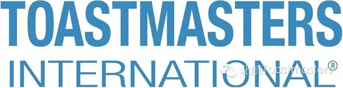

| 时间 | 俱乐部 | 地点 |
| 周一19:00--21:00 | A1 Toastmasters Club | 北京市朝阳区东三环北路17号，新时代证券大厦9楼 |
| 周一19:00-21:00 | Beijing No1 Toastmasters Club | 北京市朝阳区建外大街14号，北京广播大厦酒店305室 |
| 周一19:00--21:00 | Cheung Kong Toastmasters Club | 北京市东城区东长安街1号，东方广场E3座2楼Breakout Room |
| 周一18:00--20:00 | Diamond Ring | 北京市海淀区东北旺西路8号，中关村软件园28号，IBM中国软件实验室3号培训室 |
| 周二12:00--13:30 | Monsanto Beijing Toastmasters Club | 北京市朝阳区曙光西里甲5号，凤凰城F座7楼，Monsanto（Beijing）培训室 |
| 周二 12:00-13:30 | Lenovo Northstar | 北京市海淀区上地西路6号，联想北研大厦，G座3层 |
| 周二 12:00-13:30 | Nova Talk Toastmasters | 北京市朝阳区望京利泽东路爱立信大厦 |
| 周二19:00-21:00 | Zhongguancun Toastmasters Club | 北京市海淀区东三街2号，新东方大厦南楼，3层精英英语大教室 |
| 周二19:00--21:00 | Hutong Bilingual Toastmasters Club | 北京市朝阳区建国门外大街永安东里三块板4号(地铁永安里C口)，米阳大厦601 |
| 周二19:00--21:00 | Beijing Bilingual Toastmasters Club | 北京市朝阳区和平西苑2号，赛福特饭店A322房间 |
| 周三18:00--20:00 | AmCham China Toastmasters Club | 北京市金桐西路10号，远洋光华国际AB座6层 |
| 周三19:00--21:00 | Athena Toastmasters Club | 北京市海淀区五道口暂安处2号，北大青鸟学校地下第一教室 |
| 周三19:00-21:00 | Microsoft Beijing Toastmasters Club | 北京市海淀区丹棱街5号，微软大厦微软大厦1号楼1103会议室 |
| 周三19:00-21:00 | CHIC (Creativity Humor Imagination Club) | 北京语言大学睿智实训基地，朝阳区白家庄东里42号（姚家园路）中国轻工集团财富培训中心 |
| 隔周周三12:00--13:00 | FedEx Purple Talks Toastmasters Club | 北京市朝阳区亮马桥路32号，高斓大厦3楼会议室 |
| 周三19:00--21:00 | Global Communicators Club | 北京市朝阳区建国门外大街永安东里三块板4号（地铁一号线永安里C出口），米阳大厦6层会议室 |
| 周三11:45--13:00 | Golden Time Toastmasters | 北京市亦庄开发区荣昌东街2号，康明斯（中国）投资有限公司 |
| 周三 | Jet | 北京市朝阳区望京街8号利星行广场7楼，每周三12:00 |
| 周三隔周12:00--13:00 | FedEx Purple Talks Toastmasters Club | 北京市朝阳区亮马桥路32号，高斓大厦3楼会议室， |
| 周四11：30-13：30 | AMD Toastmasters Club | 北京市中关村科学南路2号融科资讯中心C座北楼19层Board Room |
| 周四11:45--13:00 | Golden Time Toastmasters | 北京市亦庄开发区荣昌东街2号，康明斯（中国）投资有限公司 |
| 周四11：55-13：00 | Alcatel-Lucent Smart Speakers Toastmasters Club | 北京市朝阳区望京利泽中二路望京科技创业园C座 |
| 周四11：55-13：00 | B&V Beijing Toastmasters Club | 北京市朝阳区建外大街甲6号SK大厦15层 |
| 周四11：55-13：00 | China Capital Toastmasters Club | 北京市朝阳区白家庄东里42号（姚家园路）中国轻工集团 |
| 周四12：00-13：30 | H&M Toastmasters Club | 北京市朝阳区望京东路1号摩托罗拉Campus113室 |
| 周四12：00-13：30 | Polycom Toastmasters Club | 北京市朝阳区新源南路3号平安国际金融中心A座长江会议室 |
| 周四18:00--20:00 | AmCham China Toastmasters Club | 北京市金桐西路10号，远洋光华国际AB座6层 |
| 周四19:00--21:00 | Share With U | 北京市朝阳区三元桥曙光西里28号中冶大厦6层会议室 |
| 周五12:00--13:30 | Amazing Afternoon Toastmasters Club | 北京市朝阳区阜荣街15号，索尼大厦，DH building |
| 周五19:30--21:30 | Beihang Toastmasters Club | 北京市海淀区学院路37号，北京航空航天大学,新主楼B208 |
| 周五12:15--13:30 | Caterpillar Toastmasters Club Beijing | 北京市朝阳区望京街8号，卡特彼勒大厦16楼学习中心 |
| 周五12:00--13:30 | Dedupers | 北京市海淀区中关村东路1号，清华科技园科技大厦D座19楼 |
| 单周周五12:00--14:00 | EMC Beijing Toastmasters Club | 北京市海淀区中关村东路1号，清华科技园科技大厦D座8楼会议室 |
| 周五12:00--13:00 | Ericsson Toastmasters Club | 北京市朝阳区望京利泽东街5号爱立信（中国） |
| 周五12:00--13:00 | Moto Talky Talkie | 北京市朝阳区望京东路1号摩托罗拉Campus |
| 周五12:30--13:30 | NN China Toastmasters Club | 北京市朝阳区东三环中路1号，环球金融中心东楼18层NN Office |
| 周五12:10--13:10 | NSN Beijing Toastmasters Club | 北京市酒仙桥路14号，兆维华灯大厦诺基亚西门子通信 |
| 隔周周五12:00--14:00 | The Siemens Orators | 北京市望京中环南路7号，西门子大厦2楼 |
| 周三或周五 隔周11:50-13：00 | VMware Toastmasters Club | 北京市海淀区科学院南路2号，融科资讯大厦C座南楼17层，Mercury会议室 |
| 周六19:00--21:00 | Campus Toastmasters Club | 北京市朝阳区北三环东路15号(地铁5号线和平西桥B口)，北京化工大学主教楼201 |
| 周六10：00-12：00 | EF Phoenixes Toastmasters Club | 北京市朝阳区慧忠北里103号（地铁15号线安立路站D口出），洛克时代中心C座4楼 |
| 周六10:00-12:00 | Rainbow Bridge Toastmasters | 北京市建外SOHO西区17号楼2008 OHMYDEAR会议室 |
| 周六18:00 | Supernovas TMC | 北京市西城区闹市口大街1号，长安兴融中心4号楼一层，金融街街道商务楼宇职工服务中心站，(地铁1、2号线复兴门站C口出) |
| 周六下午3:40-5:40 | ICE Toastmasters | 东城区东直门银座大厦地下二层英孚16教室 |
| 周日9:30--11:30 | Beijing Advanced Speakers | 北京市朝阳区东三环北路丙2号，天元港中心3楼EF Center |
PS：北航TMC欢迎你来做客~这里有一群欢脱的小伙伴儿等你呦~